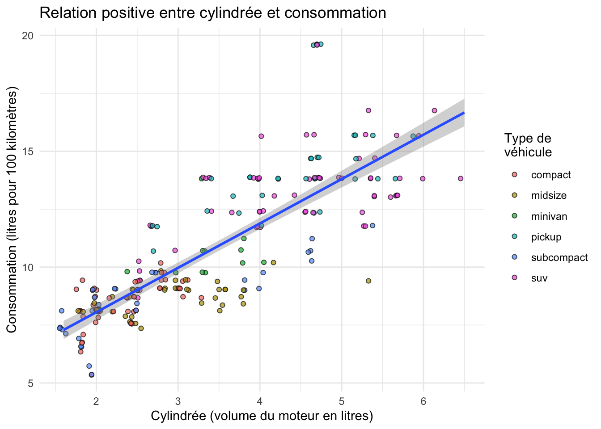

Nous abordons ici une étape essentielle de toute analyse de données : la manipulation de tableaux, la sélection de lignes, de colonnes, la création de nouvelles variables, etc. Bien souvent, les données brutes que nous importons dans R ne sont pas utiles en l’état. Il nous faut parfois sélectionner seulement certaines lignes pour travailler sur une petite partie du jeu de données. Il nous faut parfois modifier des variables existantes (pour modifier les unités par exemple) ou en créer de nouvelles à partir des variables existantes. Nous avons aussi très souvent besoin de constituer des groupes et d’obtenir des statistiques descriptives pour chaque groupe (moyenne, écart-type, erreur type, etc). Nous verrons dans ce chapitre comment faire tout cela grâce au package dplyr qui fournit un cadre cohérent et des fonctions simples permettant d’effectuer tous les tripatouillages de données dont nous pourrons avoir besoin.
Dans ce chapitre, nous aurons besoin des packages suivants :
library(dplyr)
Attachement du package : 'dplyr'
Les objets suivants sont masqués depuis 'package:stats':
filter, lag
Les objets suivants sont masqués depuis 'package:base':
intersect, setdiff, setequal, union
library(ggplot2)library(nycflights13)
4.2 Le pipe %>%
Avant d’entrer dans le vif du sujet, je souhaite introduire ici la notion de “pipe” (prononcer à l’anglo-saxonne). Le pipe est un opérateur que nous avons déjà vu apparaître à plusieurs reprises dans les chapitres précédents sans expliquer son fonctionnement.
Le pipe, noté %>%, peut être obtenu en pressant les touches ctrl + shift + M de votre clavier. Il permet d’enchaîner logiquement des actions les unes à la suite des autres. Globalement, le pipe prend l’objet situé à sa gauche, et le transmet à la fonction situé à sa droite. En d’autres termes, les 2 expressions suivantes sont strictement équivalentes :
# Ici, "f" est une fonction quelconque, "x" et "y" sont 2 objets dont la fonction a besoin.# Il s'agit d'un exemple fictif : ne tapez pas ceci dans votre script !f(x, y)x %>%f(y)
Travailler avec le pipe est très intéressant car toutes les fonctions de dplyr que nous allons décrire ensuite sont construites autour de la même syntaxe : on leur fournit un data.frame (ou encore mieux, un tibble), elles effectuent une opération et renvoient un nouveau data.frame (ou un nouveau tibble). Il est ainsi possible de créer des groupes de commandes cohérentes qui permettent, grâce à l’enchaînement d’étapes simples, d’aboutir à des résultats complexes.
De la même façon que le + permet d’ajouter une couche supplémentaire à un graphique ggplot2, le pipe %>% permet d’ajouter une opération supplémentaire dans un groupe de commandes.
Pour reprendre un exemple de la section @ref(clouds) sur les nuages de points, nous avions commencé par créer un objet nommé alaska_flights à partir de l’objet flights :
Nous savons maintenant qu’il n’est pas indispensable de faire figurer le nom des arguments data = et mapping =. Mais nous pouvons aller plus loin. En fait, il n’était même pas nécessaire de créer l’objet alaska_flights : nous aurions pu utiliser le pipe pour enchaîner les étapes suivantes :
On prend le tableau flights, puis
On filtre les données pour ne retenir que la compagnie aérienne AS, puis
On réalise le graphique
Voilà comment traduire cela avec le pipe :
flights %>%filter(carrier =="AS") %>%ggplot(aes(x = dep_delay, y = arr_delay)) +geom_point()
Notre premier graphique, produit grâce au pipe
Notez bien qu’ici, aucun objet intermédiaire n’a été créé. Notez également que le premier argument de la fonction ggplot() a disparu : le pipe a fourni automatiquement à ggplot() les données générées au préalable (les données flights filtrées grâce à la fonction filter()).
Comme pour le + de ggplot2, il est conseillé de placer un seul pipe par ligne, de le placer en fin de ligne et de revenir à la ligne pour préciser l’étape suivante.
Toutes les commandes que nous utiliserons à partir de maintenant reposeront sur le pipe puisqu’il permet de rendre le code plus lisible.
4.3 Les verbes du tripatouillage de données
Nous allons ici nous concentrer sur les fonctions les plus couramment utilisées pour manipuler et résumer des données. Nous verrons 6 verbes principaux, chacun correspondant à une fonction précise de dplyr. Chaque section de ce chapitre sera consacrée à la présentation d’un exemple utilisant un ou plusieurs de ces verbes.
Les 6 verbes sont :
filter() : choisir des lignes dans un tableau à partir de conditions spécifiques (filtrer).
arrange() : trie les lignes d’un tableau selon un ou plusieurs critères (arranger).
select() : sélectionner des colonnes d’un tableau.
mutate() : créer de nouvelles variables en transformant et combinant des variables existantes (muter).
summarise() : calculer des résumés statistiques des données (résumer). Souvent utilisé en combinaison avec group_by(), qu permet de constituer des groupes au sein des données.
join() : associer, fusionner 2 data.frames en faisant correspondre les éléments d’une colonne commune entre les 2 tableaux (joindre). Il y a de nombreuses façons de joindre des tableaux. Nous nous contenterons d’examiner les fonctions left_join() et inner_join().
Toutes ces fonctions, tous ces verbes, sont utilisés de la mêma façon : on prend un data.frame, grâce au pipe, on le transmet à l’une de ces fonctions dont on précise les arguments entre parenthèses, la fonction nous renvoie un nouveau tableau modifié. Évidemment, on peut enchaîner les actions pour modifier plusieurs fois le même tableau, c’est tout l’intérêt du pipe.
Enfin, gardez en tête qu’il existe beaucoup plus de fonctions dans dplyr que les 6 que nous allons détailler ici. Nous verrons parfois quelques variantes, mais globalement, maîtriser ces 6 fonctions simples devrait vous permettre de conduire une très large gamme de manipulations de données, et ainsi vous faciliter la vie pour la production de graphiques et l’analyse statistique de vos données.
4.4 Filtrer des lignes avec filter()
4.4.1 Principe
Schéma de la fonction filter() tiré de la ‘cheatsheet’ de dplyr et tidyr
Comme son nom l’indique, filter() permet de filtrer des lignes en spécifiant un ou des critères de tri portant sur une ou plusieurs variables. Nous avons déjà utilisé cette fonction à plusieurs reprises pour créer les jeux de données alaska_flights et small_weather :
small_weather <- weather %>%filter(origin =="EWR", month ==1, day <=15)
Dans les 2 cas, la première ligne de code nous permet :
d’indiquer le nom du nouvel objet dans lequel les données modifiées seront stockées (alaska_flights et small-weather)
d’indiquer de quel objet les données doivent être extraites (flights et weather)
de passer cet objet à la fonction suivante avec un pipe %>%
Le premier argument de la fonction filter() doit être le nom d’un data.frame ou d’un tibble. Ici, puisque nous utilisons le pipe, il est inutile de spécifier cet argument : c’est ce qui est placé à gauche du pipe qui est utilisé comme premier argument de la fonction filter(). Les arguments suivants constituent la ou les conditions qui doivent être respectées par les lignes du tableau de départ afin d’être intégrées au nouveau tableau de données.
4.4.2 Exercice
Dans la section @ref(View), nous avons utilisé la fonction View et l’application manuelle de filtres pour déterminer combien de vols avaient quitté l’aéroport JFK le 12 février 2013. En utilisant la fonction filter(), créez un objet nommé JFK_12fev qui contiendra les données de ces vols.
Vérifiez que cet objet contient bien 282 lignes.
4.4.3 Les conditions logiques
Dans la section @ref(comparaison), nous avons présenté en détail le fonctionnement des opérateurs de comparaison dans R. Relisez cette section si vous ne savez plus de quoi il s’agit. Les opérateurs de comparaison permettent de vérifier l’égalité ou l’inégalité entre des éléments. Ils renvoient TRUE ou FALSE et seront particulièrement utiles pour filtrer des lignes dans un tableau. Comme indiqué dans la section @ref(comparaison), voici la liste des opérateurs de comparaison usuels :
== : égal à
!= : différent de
> : supérieur à
< : inférieur à
>= : supérieur ou égal à
<= : inférieur ou égal à
À cette liste, nous pouvons ajouter quelques éléments utiles :
is.na() : renvoie TRUE en cas de données manquantes.
! : permet de tester le contraire d’une expression logique. Par exemple !is.na() renvoie TRUE s’il n’y a pas de données manquantes.
%in% : permet de tester si l’élément de gauche est contenu dans la série d’éléments fournie à droite. Par exemple 2 %in% 1:5 renvoie TRUE, mais 2 %in% 5:10 renvoie FALSE.
| : opérateur logique OU. Permet de tester qu’une condition OU une autre est remplie.
& : opérateur logique ET. Permet de tester qu’une condition ET une autre sont remplies.
Voyons comment utiliser ces opérateurs avec la fonction filter().
Dans le tableau flights, tous les vols prévus ont-ils effectivement décollé ? Une bonne façon de le savoir est de regarder si, pour la variable dep_time (heure de décollage), des données manquantes sont présentes :
flights %>%filter(is.na(dep_time))
# A tibble: 8,255 × 19
year month day dep_time sched_de…¹ dep_d…² arr_t…³ sched…⁴ arr_d…⁵ carrier
<int> <int> <int> <int> <int> <dbl> <int> <int> <dbl> <chr>
1 2013 1 1 NA 1630 NA NA 1815 NA EV
2 2013 1 1 NA 1935 NA NA 2240 NA AA
3 2013 1 1 NA 1500 NA NA 1825 NA AA
4 2013 1 1 NA 600 NA NA 901 NA B6
5 2013 1 2 NA 1540 NA NA 1747 NA EV
6 2013 1 2 NA 1620 NA NA 1746 NA EV
7 2013 1 2 NA 1355 NA NA 1459 NA EV
8 2013 1 2 NA 1420 NA NA 1644 NA EV
9 2013 1 2 NA 1321 NA NA 1536 NA EV
10 2013 1 2 NA 1545 NA NA 1910 NA AA
# … with 8,245 more rows, 9 more variables: flight <int>, tailnum <chr>,
# origin <chr>, dest <chr>, air_time <dbl>, distance <dbl>, hour <dbl>,
# minute <dbl>, time_hour <dttm>, and abbreviated variable names
# ¹sched_dep_time, ²dep_delay, ³arr_time, ⁴sched_arr_time, ⁵arr_delay
Seules les lignes contenant NA dans la colonne dep_time sont retenues. Il y a donc 8255 vols qui n’ont finalement pas décollé.
Dans le même ordre d’idée, y a t-il des vols qui ont décollé mais qui ne sont pas arrivés à destination ? Là encore, une façon d’obtenir cette information est de sélectionner les vols qui ont décollé (donc pour lesquels l’heure de décollage n’est pas manquante), mais pour lesquels l’heure d’atterrissage est manquante :
# A tibble: 458 × 19
year month day dep_time sched_de…¹ dep_d…² arr_t…³ sched…⁴ arr_d…⁵ carrier
<int> <int> <int> <int> <int> <dbl> <int> <int> <dbl> <chr>
1 2013 1 1 2016 1930 46 NA 2220 NA EV
2 2013 1 2 2041 2045 -4 NA 2359 NA B6
3 2013 1 2 2145 2129 16 NA 33 NA UA
4 2013 1 9 615 615 0 NA 855 NA 9E
5 2013 1 9 2042 2040 2 NA 2357 NA B6
6 2013 1 11 1344 1350 -6 NA 1518 NA EV
7 2013 1 13 1907 1634 153 NA 1837 NA EV
8 2013 1 13 2239 2159 40 NA 30 NA EV
9 2013 1 16 837 840 -3 NA 1030 NA MQ
10 2013 1 25 1452 1500 -8 NA 1619 NA US
# … with 448 more rows, 9 more variables: flight <int>, tailnum <chr>,
# origin <chr>, dest <chr>, air_time <dbl>, distance <dbl>, hour <dbl>,
# minute <dbl>, time_hour <dttm>, and abbreviated variable names
# ¹sched_dep_time, ²dep_delay, ³arr_time, ⁴sched_arr_time, ⁵arr_delay
Notez l’utilisation du ! pour la première condition. Nous récupérons ici les lignes pour lesquelles dep_time n’est pas NA et pour lesquelles arr_time est NA. Seules les lignes qui respectent cette double condition sont retenues. Cette syntaxe est équivalente à :
# A tibble: 458 × 19
year month day dep_time sched_de…¹ dep_d…² arr_t…³ sched…⁴ arr_d…⁵ carrier
<int> <int> <int> <int> <int> <dbl> <int> <int> <dbl> <chr>
1 2013 1 1 2016 1930 46 NA 2220 NA EV
2 2013 1 2 2041 2045 -4 NA 2359 NA B6
3 2013 1 2 2145 2129 16 NA 33 NA UA
4 2013 1 9 615 615 0 NA 855 NA 9E
5 2013 1 9 2042 2040 2 NA 2357 NA B6
6 2013 1 11 1344 1350 -6 NA 1518 NA EV
7 2013 1 13 1907 1634 153 NA 1837 NA EV
8 2013 1 13 2239 2159 40 NA 30 NA EV
9 2013 1 16 837 840 -3 NA 1030 NA MQ
10 2013 1 25 1452 1500 -8 NA 1619 NA US
# … with 448 more rows, 9 more variables: flight <int>, tailnum <chr>,
# origin <chr>, dest <chr>, air_time <dbl>, distance <dbl>, hour <dbl>,
# minute <dbl>, time_hour <dttm>, and abbreviated variable names
# ¹sched_dep_time, ²dep_delay, ³arr_time, ⁴sched_arr_time, ⁵arr_delay
Dans la fonction filter(), séparer plusieurs conditions par des virgules signifie que seules les lignes qui remplissent toutes les conditions seront retenues. C’est donc l’équivalent du ET logique.
Il y a donc 458 vols qui ne sont pas arrivés à destination (soit moins de 0,2% des vols au départ de New York en 2013). Selon vous, quelles raisons peuvent expliquer qu’un vol qui a décollé n’ait pas d’heure d’atterrissage ?
Enfin, pour illustrer l’utilisation de | (le OU logique) et de %in%, imaginons que nous souhaitions extraire les informations des vols ayant quitté l’aéroport JFK à destination d’Atlanta, Géorgie (ATL) et de Seatle, Washington (SEA), aux mois d’octobre, novembre et décembre :
atl_sea_fall <- flights %>%filter(origin =="JFK", dest =="ATL"| dest =="SEA", month >=10)atl_sea_fall
Examinez ce tableau avec View() pour vérifier que la variable dest contient bien uniquement les codes ATL et SEA correspondant aux 2 aéroports qui nous intéressent. Nous avons extrait ici les vols à destination d’Atlanta et Seatle, pourtant, il nous a fallu utiliser le OU logique. Car chaque vol n’a qu’une unique destination, or nous souhaitons récupérer toutes les lignes pour lesquelles la destination est soit ATL, soit SEA (l’une ou l’autre).
Une autre solution pour obtenir le même tableau est de remplacer l’expression contenant | par une expression contenant %in% :
atl_sea_fall2 <- flights %>%filter(origin =="JFK", dest %in%c("ATL", "SEA"), month >=10)atl_sea_fall2
Ici, toutes les lignes du tableau dont la variable dest est égale à un élément du vecteur c("ATL", "SEA") sont retenues. L’utilisation du OU logique eput être source d’erreur. Je préfère donc utiliser %in% qui me semble plus parlant. La fonction identical() nous confirme que les deux façons de faire produisent exactement le même résultat, libre à vous de rpivilégier la méthode qui vous convient le mieux :
identical(atl_sea_fall, atl_sea_fall2)
[1] TRUE
4.5 Créer des résumés avec summarise() et group_by()
4.5.1 Principe de la fonction summarise()
Schéma de la fonction summarise() tiré de la ‘cheatsheet’ de dplyr et tidyr
La figure @ref(fig:summarisefig2) ci-dessus indique comment fonctionne la fonction summarise() : elle prend plusieurs valeurs (potentiellement, un très grand nombre) et les réduit à une unique valeur qui les résume. Lorsque l’on applique cette démarche à plusieurs colonnes d’un tableau, on obtient un tableau qui ne contient plus qu’une unique ligne de résumé.
La valeur qui résume les données est choisie par l’utilisateur. Il peut s’agir par exemple d’un calcul moyenne ou de variance, il peut s’agir de calculer une somme, ou d’extraire la valeur maximale ou minimale, ou encore, il peut tout simplement s’agir de déterminer un nombre d’observations.
Ainsi, pour connaître la température moyenne et l’écart-type des températures dans les aéroports de New York, il suffit d’utiliser le tableau weather et sa variable temp que nous avons déjà utilisés dans les chapitres précédents :
# A tibble: 1 × 2
moyenne ecart_type
<dbl> <dbl>
1 NA NA
Les fonctions mean() et sd() permettent de calculer une moyenne et un écart-type respectivement. Ici, les valeurs retournées sont NA car une valeur de température est manquante :
weather %>%filter(is.na(temp))
# A tibble: 1 × 15
origin year month day hour temp dewp humid wind_dir wind_speed wind_gust
<chr> <int> <int> <int> <int> <dbl> <dbl> <dbl> <dbl> <dbl> <dbl>
1 EWR 2013 8 22 9 NA NA NA 320 12.7 NA
# … with 4 more variables: precip <dbl>, pressure <dbl>, visib <dbl>,
# time_hour <dttm>
Pour obtenir les valeurs souhaitées, il faut indiquer à R d’exclure les valeurs manquantes lors des calculs de moyenne et écart-types :
La température moyenne est donc de 55.3 degrés Farenheit et l’écart-type vaut 17.8 degrés Farenheit.
4.5.2 Intérêt de la fonction group_by()
La fonction devient particulièrement puissante lorsqu’elle est combinée avec la fonction group_by() :
(ref:groupby)
(ref:groupby) Fonctionnement de group_by() travaillant de concert avec summarise(), tiré de la ‘cheatsheet’ de dplyr et tidyr.
Comme son nom l’indique, la fonction group_by() permet de créer des sous-groupes dans un tableau, afin que le résumé des données soit calculé pour chacun des sous-groupes plutôt que sur l’ensemble du tableau. En ce sens, son fonctionnement est analogue à celui des facets de ggplot2 qui permettent de scinder les données d’un graphique en plusieurs sous-groupes.
Pour revenir à l’exemple des températures, imaginons que nous souhaitions calculer les températures moyennes et les écart-types pour chaque mois de l’année. Voilà comment procéder :
On groupe les données selon la variable month, puis
On résume les données groupées sous la forme de moyennes et d’écart-types
Nous pouvons aller plus loin. Ajoutons à ce résumé 2 variables supplémentaires : le nombre de mesures et l’erreur standard (notée \(se\)), qui peut être calculée de la façon suivante :
\[se \approx \frac{s}{\sqrt{n}}\]
avec \(s\), l’écart-type de l’échantillon et \(n\), la taille de l’échantillon. Cette grandeur est très importante en statistique puisqu’elle nous permet de quantifier l’imprécision de la moyenne. Elle intervient d’ailleurs dans le calcul de l’intervalle de confiance de la moyenne d’un échantillon. Nous allons donc calculer ici ces résumés, et nous donnerons un nom au tableau créé pour ouvoir ré-utiliser ces statistiques descriptives :
Vous constatez ici que nous avons 4 statistiques descriptives pour chaque mois de l’année. Deux choses sont importantes à retenir ici :
on peut obtenir le nombre d’observations dans chaque sous-groupe d’un tableau groupé en utilisant la fonction n(). Cette fonction n’a besoin d’aucun argument : elle détermine automatiquement la taille des groupes créés par group_by().
on peut créer de nouvelles variables en utilisant le nom de variables créées auparavant. Ainsi, nous avons créé la variable erreur_std en utilisant deux variables créées au préalable : ecart-type et nb_obs
4.5.3 Ajouter des barres d’erreurs sur un graphique
Ce jeu de données contient donc les données nécessaires pour nous permettre de visualiser sur un graphique l’évolution des températures moyennes enregistrées dans les 3 aéroports de New York en 2013. Outre les température moyennes, nous devons faire figurer l’imprécision des estimations de moyenne avec des barres d’erreur (à l’aide de la fonction geom_inerange()). Comme expliqué plus haut, l’imprécision des moyennes calculées est estimée grâce à l’erreur standard. Toutefois, ici, les imprécisions sont tellement faibles que les barres d’erreurs resteront invisibles :
Évolution des températures moyenne dans 3 aéroports de New York en 2013
Vous remarquerez que :
j’associe factor(month), et non simplement month, à l’axe des x afin d’avoir, sur l’axe des abscisses, des chiffres cohérents allant de 1 à 12, et non des chiffres à virgule
l’argument group = 1 doit être ajouté pour que la ligne reliant les points apparaisse. En effet, les lignes sont censées relier des points qui appartiennent à une même série temporelle. Or ici, nous avons transformé month en facteur. Préciser group = 1 permet d’indiquer à geom_line() que toutes les catégories du facteur month appartiennent au même groupe, que ce facteur peut être considéré comme une variable continue, et qu’il est donc correct de relier les points.
la fonction geom_linerange() contient de nouvelles caractéristiques esthétiques qu’il nous faut obligatoirement renseigner : les extrémités inférieures et supérieures des barres d’erreur. Il nous faut donc associer 2 variables à ces caractéristiques esthétiques. Ici, nous utilisons moyenne - erreur_std pour la borne inférieure des barres d’erreur, et moyenne + erreur_std pour la borne supérieure. Les variables moyenne et erreur_std faisant partie du tableau monthly_temp, geom_linerange() les trouve sans difficulté.
les barres d’erreur produites sont minuscules. Je les ai fait apparaître en rouge afin de les rendre visibles, mais même comme cela, il faut zoomer fortement pour les distinguer. Afin de rendre l’utilisation de geom_linerange() plus explicite, je produis ci-dessous un autre graphique en remplaçant les erreurs standard par les écart-types en guise de barres d’erreur. Attention, ce n’est pas correct d’un point de vue statistique ! Les barres d’erreur doivent permettre de visualiser l’imprécision de la moyenne. C’est donc bien les erreurs standard qu’il faut faire figurer en guise de barres d’erreurs et non les écarty-types. Le graphique ci-dessous ne figure donc qu’à titre d’exemple, afin d’illustrer de façon plus parlante le fonctionnement de la fonction geom_linerange() :
monthly_temp %>%ggplot(aes(x =factor(month), y = moyenne, group =1)) +geom_line() +geom_point() +geom_linerange(aes(ymin = moyenne - ecart_type, ymax = moyenne + ecart_type)) +labs(x ="Mois",y ="Température (ºFarenheit)", title ="Évolution des températures dans 3 aéroports de New York en 2013",subtitle ="Attention : les barres d'erreurs sont les écarts-types.\n Il faut normalement faire figurer les erreurs standard.")
Évolution des températures moyenne dans 3 aéroports de New York en 2013
4.5.4 Grouper par plus d’une variable
Jusqu’ici, nous avons groupé les données de température par mois. Il est tout à fait possible de grouper les données par plus d’une variable, par exemple, par mois et par aéroport d’origine :
En plus de la variable month, la tableau monthly_orig_temp contient une variable origin. Les statistiques que nous avons calculées plus tôt sont maintenant disponibles pour chaque mois et chacun des 3 aéroports de New York. Nous pouvons utiliser ces données pour comparer les 3 aéroports :
monthly_orig_temp %>%ggplot(aes(x =factor(month), y = moyenne, group = origin, color = origin)) +geom_line() +geom_point() +geom_linerange(aes(ymin = moyenne - ecart_type, ymax = moyenne + ecart_type)) +labs(x ="Mois",y ="Température (ºFarenheit)", title ="Évolution des températures dans 3 aéroports de New York en 2013",subtitle ="Attention : les barres d'erreurs sont les écarts-types.\n Il faut normalement faire figurer les erreurs standard.")
Évolution des températures moyenne dans 3 aéroports de New York en 2013
Notez que j’utilise maintenant group = origin et non plus group = 1. Ici, les températures des 3 aéroports sont tellement similaires que les courbes sont difficiles à distinguer. Nous pouvons donc utiliser facet_wrap() pour tenter d’améliorer la visualisation :
monthly_orig_temp %>%ggplot(aes(x =factor(month), y = moyenne, group = origin, color = origin)) +geom_line() +geom_point() +geom_linerange(aes(ymin = moyenne - ecart_type, ymax = moyenne + ecart_type)) +facet_wrap(~origin, ncol =1) +labs(x ="Mois",y ="Température (ºFarenheit)", title ="Évolution des températures dans 3 aéroports de New York en 2013",subtitle ="Attention : les barres d'erreurs sont les écarts-types.\n Il faut normalement faire figurer les erreurs standard.")
Évolution des températures moyenne dans 3 aéroports de New York en 2013
Enfin, lorsque nous groupons par plusieurs variables, il peut être utile de présenter les résultats sous la forme d’un tableau large (grâce à la fonction pivot_wider(), voir section @ref(spread)) pour l’intégration dans un rapport par exemple :
Sous cette forme, les données ne sont plus “rangées”, nous n’avons plus des “tidy data”, mais nous avons un tableau plus synthétique, facile à inclure dans un rapport.
4.5.5 Un raccourci pratique pour compter des effectifs
Il est tellement fréquent d’avoir à grouper des données en fonction d’une variable puis à compter le nombre d;observations dans chaque catégorie avrc n() que dplyr nous fournit un raccourci : la fonction count().
Faites un tableau indiquant combien de vols ont été annulés après le décollage, pour chaque compagnie aérienne. Vous devriez obtenir le tableau suivant :
# A tibble: 13 × 2
carrier cancelled
<chr> <int>
1 9E 71
2 AA 34
3 B6 32
4 DL 15
5 EV 105
6 F9 1
7 FL 6
8 MQ 87
9 UA 63
10 US 31
11 VX 4
12 WN 8
13 YV 1
Faites un tableau indiquant les vitesses de vents minimales, maximales et moyennes, enregistrées chaque mois dans chaque aéroport de New York. Votre tableau devrait ressembler à ceci :
`summarise()` has grouped output by 'origin'. You can override using the
`.groups` argument.
Sachant que les vitesses du vent sont exprimées en miles par heure, certaines valeurs sont-elles surprenantes ? À l’aide de la fonction filter(), éliminez la ou les valeurs aberrantes. Vous devriez obtenir ce tableau :
`summarise()` has grouped output by 'origin'. You can override using the
`.groups` argument.
En utilisant les données de vitesse de vent du tableau weather, produisez le graphique suivant :
Indications :
les vitesses de vent aberrantes ont été éliminées grâce à la fonction filter()
la fonction geom_jitter() a été utilisée avec l’argument height = 0
la transparence des points est fixée à 0.2
Selon vous, pourquoi les points sont-ils organisés en bandes horizontales ?
Selon vous, pourquoi n’y a t’il jamais de vent entre 0 et environ 3 miles à l’heure (mph) ?
Sachant qu’en divisant des mph par 1.151 on obtient des vitesses en nœuds, que nous apprend cette commande :
Schéma de la fonction select() tiré de la ‘cheatsheet’ de dplyr et tidyr
Il n’est pas rare de travailler avec des tableaux contenant des centaines, voir des milliers de colonnes. Dans de tels cas, il peut être utile de réduire le jeu de données aux variables qui vous intéressent. Le rôle de la fonction select() est de retenir uniquement les colonnes dont on a spécifié le nom, afin de recentrer l’analyse sur les variables utiles.
select() n’est pas particulièrement utile pour le jeu de données flights puisqu’il ne contient que 19 variables. Toutefois, on peut malgré tout comprendre le fonctionnement général. Par exemle, pour sélectionner uniquement les colonnes year, month et day, on tape :
# Sélection de variables par leur nomflights %>%select(year, month, day)
Évidemment, le tableau flights n’est pas modifié par cette opération : il contient toujours les 19 variables de départ. Pour travailler avec ces tableaux de données contenant moins de variables, il faut les stocker dans un nouvel objet en leur donnant un nom :
Enfin, on peut utiliser select() pour renommer des variables. Mais ce n’est que rarement utile car select() élimine toutes les variables qui n’ont pas été explicitement nommées :
Schéma de la fonction mutate() tiré de la ‘cheatsheet’ de dplyr et tidyr
La fonction mutate() permet de créer de nouvelles variables à partir des variables existantes, ou de modifier des variables déjà présentes dans un jeu de données. Il est en effet fréquent d’avoir besoin de calculer de nouvelles variables, souvnet plus informatives que les variables disponibles.
Voyons un exemple. Nous commençons par créer un nouveau jeu de données flights_sml en sélectionnant uniquement les variables qui nous seront utiles :
À partir de ce nouveau tableau, nous allons calculer 2 nouvelles variables :
gain : afin de savoir si les avions peuvent rattraper une partie de leur retard en vol, nous allons calculer la différence entre le retard au départ et à l’arrivée (donc le gain de temps accumlé lors du vol). En effet, si un avion décolle avec 15 minutes de retard, mais qu il atterrit avec seulement 5 minutes de retard, 10 minutes ont été gagnées en vol, et les passagers sont moins mécontents.
speed afin de connaitre la vitesse moyenne des avions en vol, nous allons diviser la distance parcourue par les avions par le temps passé en l’air. Il ne faudra pas oublier de multiplier par 60 car les temps sont exprimés en minutes. Nous en profiterons pour transformer les distances exprimées en miles par des distances exprimées en kilomètres en multipliant les distances en miles par 1.60934. Ainsi, speed sera exprimée en kilomètres par heure.
Dans ggplot2 le jeu de données mpg contient des informations sur 234 modèles de voitures. Examinez ce jeu de données avec la fonction View() et consultez l’aide de ce jeu de données pour savoir à quoi correspondent les différentes variables. Quelle(s) variable(s) nous renseignent sur la consommation des véhicules ? À quoi correspond la variable disp ?
La consommation est donnée en miles par gallon. Créez une nouvelle variable conso qui contiendra la consommation sur autoroute, exprimée en nombre de litres pour 100 kilomètres.
Faîtes un graphique présentant la relation entre la cylindrée en litres et la consommation sur autoroute exprimée en nombre de litres pour 100 kilomètres. Vous excluerez les véhicules dont la classe est 2seater de ce graphique (il s’agit de voitures de sports très compactes qu’il est difficile de mesurer aux autres). Sur votre graphique, la couleur devrait représenter le type de véhicule. Vous ajouterez une droite de régression en utilisant geom_smooth(method = "lm"). Votre graphique devrait ressembler à ceci :
`geom_smooth()` using formula 'y ~ x'
Consommation en fonction de la cylindrée
Ce graphique présente-t’il correctement l’ensemble des données de ces 2 variables ? Pourquoi ? Comparez le graphique @ref(fig:consommation) de la question 3 ci-dessus et le graphique @ref(fig:consommation2) présenté ci-dessous. Selon vous, quels arguments et/ou fonctions ont été modifiés pour arriver à ce nouveau graphique ? Quels sont les avantages et les inconvénients de ce graphique par rapport au précédent ?
`geom_smooth()` using formula 'y ~ x'

Consommation en fonction de la cylindrée
4.8 Trier des lignes avec arrange()
Schéma de la fonction arrange() tiré de la ‘cheatsheet’ de dplyr et tidyr
La fonction arrange() permet de trier des tableaux en ordonnant les éléments d’une ou plusieurs colonnes. Les tris peuvent être en ordre croissants (c’est le cas par défaut) ou décroissants (grâce à la fonction desc(), abbréviation de “descending”).
arrange() fonctionne donc comme filter(), mais au lieu de sélectionner des lignes, cette fonction change leur ordre. Il faut lui fournir le nom d’un tableau et au minimum le nom d’une variable selon laquelle le tri doit être réalisé. Si plusieurs variables sont fournies, chaque variable supplémentaire permet de résoudre les égalités. Ainsi, pour ordonner le tableau flights par ordre croissant de retard au départ (dep_delay), on tape :
Notez que la variable dep-delay est maintenant triée en ordre croissant. Notez également que 2 vols ont eu exactement 25 minutes d’avance. Comparez le tableau précédent avec celui-ci :
Les lignes des 2 vols ayant 25 minutes d’avance au décollage ont été inversées : le vol du mois de mars apparait maintenant avant le vol du mois d’octobre. La variable month a été utilisée pour ordonner les lignes en cas d’égalité de la variable dep_delay.
Comme indiqué plus haut, il est possible de trier les données par ordre décroissant :
Cela est particulièrement utile après l’obtention de résumés groupés pour connaître la catégorie la plus représentée. Par exemple, si nous souhaitons connaître les destinations la plus fréquentes au départ de New York, on peut procéder ainsi :
prendre le tableau flights, puis,
grouper les données par destination (variable dest) et compter le nombre de vols. Ces deux opérations peuvent être effectuées avec group_by() puis summarise(), ou directement avec count(). Puis,
trier les données par effectif décroissant.
flights %>%count(dest) %>%arrange(desc(n))
# A tibble: 105 × 2
dest n
<chr> <int>
1 ORD 17283
2 ATL 17215
3 LAX 16174
4 BOS 15508
5 MCO 14082
6 CLT 14064
7 SFO 13331
8 FLL 12055
9 MIA 11728
10 DCA 9705
# … with 95 more rows
Nous voyons ici que les aéroports ORD et ATL sont les 2 destinations les plus fréquentes, avec plus de 17000 vols par an.
4.9 Associer plusieurs tableaux avec left_join() et inner_join()
4.9.1 Principe
Une autre règle que nous n’avons pas encore évoquée au sujet des “tidy data” ou “données rangées” est la suivante :
Chaque tableau contient des données appartenant à une unité d’observation cohérente et unique.
Autrement dit, les informations concernant les vols vont dans un tableau, les informations concernant les aéroports dans un autre tableau, et celles concernant les avions dans un troisième tableau. Cela semble évident, pourtant, on constate souvent qu’un même tableau contient des variables qui concernent des unités d’observations différentes.
Lorsque nous avons plusieurs tableaux à disposition, il peut alors être nécessaire de récuppérer des informations dans plusieurs d’entre eux afn, notamment de produire des tableaux de synthèse. Par exemple, dans la section @ref(arrange) ci-dessus, nous avons affiché les destinations les plus fréquentes au départ des aéroports de New York. Donnons un nom à ce tableau pour pouvoir le ré-utiliser :
# A tibble: 105 × 2
dest n
<chr> <int>
1 ORD 17283
2 ATL 17215
3 LAX 16174
4 BOS 15508
5 MCO 14082
6 CLT 14064
7 SFO 13331
8 FLL 12055
9 MIA 11728
10 DCA 9705
# … with 95 more rows
À quel aéroport correspondent les codes ORD et ATL ? S’agit-il d’Orlando et Atlanta ? Pour le savoir, il faut aller chercher l’information qui se trouve dans le tableau airports : il contient, parmi d’autres variables, les codes et les noms de 1458 aéroports aux État-Unis.
dplyr fournit toute une gamme de fonctions permettant d’effectuer des associations de tableaux en fonction de critères spécifiés par l’utilisateur.
4.9.2inner_join()
(ref:innerjoin)
(ref:innerjoin) Schéma de la fonction inner_join() tiré de la ‘cheatsheet’ de dplyr et tidyr.
La fonction inner_join() permet de relier des tableaux en ne conservant que les lignes qui sont présentes à la fois dans l’un et dans l’autre. Il faut identifier dans chacun des tableaux une colonne contenant des données en commun, qui servira de guide pour mettre les lignes correctes les unes en face des autres. Ici, nous partons de notre tableau popular_dest, qui contient les codes des aéroports dans sa colonne dest. Et nous faisons une “jointure interne” avec le tableau airports qui contient lui aussi une colonne contenant les codes des aéroports : la variable faa.
inner_popular <- popular_dest %>%inner_join(airports, by =c("dest"="faa"))inner_popular
# A tibble: 101 × 9
dest n name lat lon alt tz dst tzone
<chr> <int> <chr> <dbl> <dbl> <dbl> <dbl> <chr> <chr>
1 ORD 17283 Chicago Ohare Intl 42.0 -87.9 668 -6 A Amer…
2 ATL 17215 Hartsfield Jackson Atlanta … 33.6 -84.4 1026 -5 A Amer…
3 LAX 16174 Los Angeles Intl 33.9 -118. 126 -8 A Amer…
4 BOS 15508 General Edward Lawrence Log… 42.4 -71.0 19 -5 A Amer…
5 MCO 14082 Orlando Intl 28.4 -81.3 96 -5 A Amer…
6 CLT 14064 Charlotte Douglas Intl 35.2 -80.9 748 -5 A Amer…
7 SFO 13331 San Francisco Intl 37.6 -122. 13 -8 A Amer…
8 FLL 12055 Fort Lauderdale Hollywood I… 26.1 -80.2 9 -5 A Amer…
9 MIA 11728 Miami Intl 25.8 -80.3 8 -5 A Amer…
10 DCA 9705 Ronald Reagan Washington Na… 38.9 -77.0 15 -5 A Amer…
# … with 91 more rows
Le nouvel objet inner_popular contient donc les données du tableau popular_dest auxquelles ont été ajoutées les colonnes correspondantes du tableau airports. Si tout ce qui nous intéresse, c’est de connaitre le nom complet des aéroports les plus populaires, on peut utiliser select() pour ne garder que les variables intéressantes :
inner_popular <- popular_dest %>%inner_join(airports, by =c("dest"="faa")) %>%select(dest, name, n)inner_popular
# A tibble: 101 × 3
dest name n
<chr> <chr> <int>
1 ORD Chicago Ohare Intl 17283
2 ATL Hartsfield Jackson Atlanta Intl 17215
3 LAX Los Angeles Intl 16174
4 BOS General Edward Lawrence Logan Intl 15508
5 MCO Orlando Intl 14082
6 CLT Charlotte Douglas Intl 14064
7 SFO San Francisco Intl 13331
8 FLL Fort Lauderdale Hollywood Intl 12055
9 MIA Miami Intl 11728
10 DCA Ronald Reagan Washington Natl 9705
# … with 91 more rows
On peut noter plusieurs choses dans ce nouveau tableau :
ORD n’est pas l’aéroport d’Orlando mais l’aéroport international de Chicago Ohare. C’est donc la destination la plus fréquente au départ de New York.
ATL est bien l’aéroport d’Atlanta.
inner_popular contient 101 lignes alors que notre tableau de départ en contenait 105.
nrow(popular_dest)
[1] 105
nrow(inner_popular)
[1] 101
Certaines lignes ont donc été supprimées car le code aéroport dans popular_dest (notre tableau de départ) n’a pas été retrouvé dans la colonne faa du tableau airports. C’est le principe même de la jointure interne (voir figure @ref(fig:inner)) : seules les lignes communes trouvées dans les 2 tableaux sont conservées. Si l’on souhaite absolument conserver toutes les lignes du tableau de départ, il faut faire une jointure gauche, ou “left join”.
4.9.3left_join()
(ref:leftjoin)
(ref:leftjoin) Schéma de la fonction left_join() tiré de la ‘cheatsheet’ de dplyr et tidyr.
Comme indiqué par la figure @ref(fig:left) ci-dessus, une jointure gauche permet de conserver toutes les lignes du tableau de gauche, et de leur faire correspondre des lignes du second tableau. Si aucune correspondance n’est trouvée dans le second tableau, des données manquantes sont ajoutées sous forme de NAs. Voyons ce que cela donne avec le même exemple que précédemment :
left_popular <- popular_dest %>%left_join(airports, by =c("dest"="faa")) %>%select(dest, name, n)left_popular
# A tibble: 105 × 3
dest name n
<chr> <chr> <int>
1 ORD Chicago Ohare Intl 17283
2 ATL Hartsfield Jackson Atlanta Intl 17215
3 LAX Los Angeles Intl 16174
4 BOS General Edward Lawrence Logan Intl 15508
5 MCO Orlando Intl 14082
6 CLT Charlotte Douglas Intl 14064
7 SFO San Francisco Intl 13331
8 FLL Fort Lauderdale Hollywood Intl 12055
9 MIA Miami Intl 11728
10 DCA Ronald Reagan Washington Natl 9705
# … with 95 more rows
En apparence, le tableau left_popular, créé avec left_join() semble identique au tableau inner_popular créé avec inner_join(). Pourtant, ce n’est pas le cas :
identical(inner_popular, left_popular)
[1] FALSE
En l’occurence, nous avons vu que inner_popular ne contenait pas autant de ligne que le tableau de départ popular_dest. Avec une jointure gauche, les lignes du tableau de départ sont toutes conservées. popular_dest et left_popular ont donc le même nombre de lignes.
nrow(inner_popular)
[1] 101
nrow(left_popular)
[1] 105
nrow(popular_dest)
[1] 105
Pour savoir quelles lignes de popular_dest manquent dans inner_dest (il devrait y en avoir 4), il suffit de filtrer les lignes de left_dest qui contiennent des données manquantes dans la colonne name :
left_popular %>%filter(is.na(name))
# A tibble: 4 × 3
dest name n
<chr> <chr> <int>
1 SJU <NA> 5819
2 BQN <NA> 896
3 STT <NA> 522
4 PSE <NA> 365
Une rapide recherche dans un moteur de recherche vous apprendra que ces aéroports ne sont pas situés sur le sol américain. Trois d’entre eux sont situés à Puerto Rico (SJU, BQN et PSE) et le dernier (STT) est situé aux Îles Vierges.
Il y aurait bien plus à dire sur les jointures :
Quelles sont les autres possibilités de jointures (right_join(), outer_join(), full_join(), etc…) ?
Que se passe-t’il si les colonnes communes des 2 tableaux contiennent des élements dupliqués ?
Est-il toujours nécessaire d’utiliser l’argument by ?
Est-il possible de joindre des tableaux en associant plus d’une colonne de chaque tableau d’origine ?
Pour avoir la réponse à toutes ces questions, je vous conseille de lire ce chapitre de cet ouvrage très complet sur “la science des données” avec R et le tidyverse : R for Data Science.
Néanmoins, avec les deux fonctions inner_join() et left_join() décrite ici devraient vous permettre de couvrir l’essentiel de vos besoins.
4.10 Exercices
Créez un tableau delayed indiquant, pour chaque compagnie aérienne et chaque mois de l’année, le nombre de vols ayant eu un retard supérieur à 30 minutes à l’arrivée à destination. Ce tableau devrait contenir uniquement 3 colonnes :
carrier : la compagnie aérienne
month : le mois de l’année 2013
n_delayed : le nombre de vols ayant plus de 30 minutes de retard
Créez un tableau total indiquant le nombre total de vols affrétés (et non annulés) par chaque compagnie aérienne et chaque mois de l’année. Ce tableau devrait contenir seulement 3 colonnes :
carrier : la compagnie aérienne
month : le mois de l’année 2013
n_total : le nombre total de vols arrivés à destination
Fusionnez ces 2 tableaux en réalisant la jointure appropriée. Le tableau final, que vous nommerez carrier_stats devrait contenir 185 lignes. Si certaines colonnes contiennent des données manquantes, remplacez-les par des 0 à l’aide des fonctions mutate() et replace_na().
Ajoutez à votre tableau carrier_stats une variable rate qui contient la proportion de vols arrivés à destination avec plus de 30 minutes de retard, pour chaque compagnie aérienne et chaque mois de l’année.
Ajoutez à votre tableau carrier_stats le nom complet des compagnies aériennes en réalisant la jointure appropriée avec le tableau airlines.
Faites un graphique synthétique présentant ces résultats de la façon la plus claire possible
Quelle compagnie aérienne semble se comporter très différemment des autres ? À quoi pouvez-vous attribuer ce comportement atypique ?
Pour les compagnies affretant un grand nombre de vols chaque année (e.g. UA, B6 et EV), quelles sont les périodes où les plus fortes proportions de vols en retard sont observées ? Et les plus faibles ? Quelle(s) hypothèse(s) pouvez-vous formuler pour expliquer ces observations ?
Faites un tableau synthétique présentant ces résultats de la façon la plus compacte et claire que possible, afin par exemple de les intégrer à un rapport.